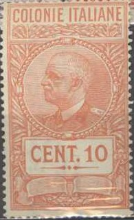

Return To Catalogue - Italy overview
Note: on my website many of the
pictures can not be seen! They are of course present in the
catalogue;
contact me if you want to purchase the catalogue.
10 c grey (Boccacio, red overprint) 15 c brown (Machiavelli, red overprint) 20 c green (Sarpi, red overprint) 25 c green (Alfieri, red overprint) 30 c brown (Foscolo) 50 c blue (Leopardi, red overprint) 75 c red (Carducci) 1.25 L blue (Botta, red overprint) 1.75 L violet (Torquato Tasso, red overprint) 2.75 L orange (Petrarca) 5 L + 2 L green (Ariosto, red overprint) 10 L + 2.50 L blue (Dante, red overprint) Airmail
50 c grey (Da Vinci aeroplane, red overprint) 1 L blue (Da Vinci, red overprint) 3 L green (design as 1 L, red overprint) 5 L brown (design as 1 L, red overprint) 7.70 L + 2 L red (design as 50 c) 10 L + 2.50 L orange (design as 1 L)
100 L green and brown
10 c green 20 c red 25 c green 30 c green 50 c red 75 c red 1.25 L blue 1.75 L + 25 c blue 2.55 L + 50 c brown 5 L + 1 L blue Airmail 50 c red 80 c green 1 L + 25 c brown 2 L + 50 c brown 5 L + 1 L brown Airmail express stamps 2.25 L + 1 L violet and black 4.50 L + 1.50 L brown and green
10 c brown 20 c lilac 25 c green 50 c violet 75 c red 1.25 L blue 2.75 L orange 5 L + 2 L green 10 L + 2.50 L red Airmail 50 c red 1 L black 3 L red 5 L brown 7.70 L + 2 L green 10 L + 2.50 L blue 50 L violet
5 c orange 25 c green 50 c violet 75 c red (design as 5 c) 1.25 L blue (design as 25 c) 1.75 L red (design as 50 c) 2.75 L blue (design as 5 c) 5 L brown (design as 25 c) 10 L black (design as 50 c) 25 L black Airmail 50 c brown 75 c lilac 1 L brown (design as 50 c) 3 L black (design as 75 c) 10 L lilac (design as 50 c) 12 L green (design as 75 c) 20 L black (man starting aeroplane) 50 L blue
20 c orange 30 c green 50 c black 1.25 L blue
10 c olive 50 c violet 1.25 L blue 5 L brown (football player) 10 L black Airmail 50 c brown (stadium and aeroplane) 75 c lilac (design as 50 c) 5 L black (man catching ball, earoplane in background) 10 L orange (design as 5 L) 15 L red (design as 50 c) 25 L green (design as 5 L) 50 L green (ball and earoplane)
25 L black

I've also seen the value 50 c lilac in this design. I've also
seen a 5 c lilac and 10 c orange with additional arabic
inscription below the country name and the value inscription.
This colony consisted of Ethiopia (Abyssinia), Eritrea and Italian Somaliland (Somalia) and was established in 1936. It ceased to exist in 1941.
2 c orange (dear) 5 c brown (eagle and lion fighting) 7 1/2 c violet (King Victor Emanuel III) 10 c olive (statue) 15 c green (man holding banner) 20 c red (design as 7 1/2 c) 25 c green (desert road) 30 c olive (design as 2 c) 35 c blue (design as 5 c) 50 c violet (design as 7 1/2 c) 75 c red (design as 15 c) 1 L green (design as 25 c) 1.25 L blue (design as 7 1/2 c) 1.75 L orange (design as 10 c) 2 L red (design as 5 c) 2.55 L brown (design as 25 c) 3.70 L violet (design as 2 c) 5 L blue (design as 15 c) 10 L red (design as 5 c)
5 c brown (statue of Augustus) 10 c red (statue) 25 c green (design as 5 c) 50 c violet (design as 10 c) 75 c red (design as 5 c) 1.25 L blue (design as 10 c)
25 c green (landscape with aeroplane) 50 c olive (statue and landscape with aeroplane) 60 c orange (aeroplane above lake) 75 c brown (design as 25 c) 1 L blue (sitting eagle and earoplane) 1.50 L violet (design as 50 c) 2 L black (design as 60 c) 3 L red (design as 25 c) 5 L brown (design as 1 L) 10 L lilac (design as 50 c) 25 L blue (design as 25 c)
2 L blue 2.50 L brown
50 c brown 1 L violet
5 c olive (landscape with boat) 10 c orange (fishing?) 25 c green (statue) 50 c violet (design as 5 c) 1.25 L blue (design as 25 c) 2 L + 75 c red (design as 10 c) Airmail 50 c olive (tractor and aeroplane) 1 L violet (aeroplane above city) 2 L + 75 c blue (design as 50 c) 5 L + 2.50 L brown (design as 1 L)
5 c light brown
10 c brown
20 c black
25 c blue
50 c lilac
75 c red
1.25 L blue
Airmail 'POSTE AEREA' with aeroplane included in the design
1 L blue ('1 LIRA' in the center)
1 L blue ('1 LIRA' in the bottom left)
1.25 L green (inscription 'ESPRESSO') 2.50 L red (inscription 'EXPRES')
5 c brown 10 c blue 20 c red 25 c green 30 c orange 40 c black 50 c violet 60 c blue Slightly different design 1 L orange 2 L green 5 L violet 10 L blue 20 L red
10 c blue 20 c lilac
Stamps - Francobolli - Timbres - Briefmarken - Postzegels
{kind=link}